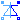
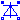
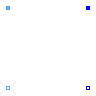
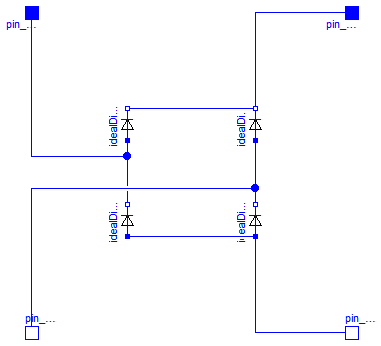

This package hosts utilities for test examples of quasi stationary single phase circuits. Quasi stationary theory for single phase circuits can be found in the references.
Extends from Modelica.Icons.Package (Icon for standard packages).
| Name | Description |
|---|---|
|  IdealACDCConverter | Ideal AC DC converter |
|  GraetzRectifier | Graetz rectifier bridge |

This is an ideal AC DC converter, based on a power balance between QS circuit and DC side. The paramater conversionFactor defines the ratio between averaged DC voltage and QS rms voltage. Furthermore, reactive power at the QS side is set to 0.
Of course no voltage or current ripple is present, neither at the QS side nor at the DC side. At the QS side, only base harmonics of voltage and current are taken into account. At the DC side, only the mean of voltage and current are taken into account.
| Type | Name | Default | Description |
|---|---|---|---|
| Real | conversionFactor | Ratio of DC voltage / QS rms voltage |
| Type | Name | Description |
|---|---|---|
| PositivePin | pin_pQS | |
| NegativePin | pin_nQS | |
| PositivePin | pin_pDC | |
| NegativePin | pin_nDC |
model IdealACDCConverter "Ideal AC DC converter" parameter Real conversionFactor "Ratio of DC voltage / QS rms voltage"; import Modelica.ComplexMath.real; import Modelica.ComplexMath.imag; import Modelica.ComplexMath.conj; import Modelica.ComplexMath.'abs'; import Modelica.ComplexMath.arg; Modelica.SIunits.ComplexVoltage vQS= pin_pQS.v - pin_nQS.v "AC QS voltage"; Modelica.SIunits.ComplexCurrent iQS= pin_pQS.i "AC QS current"; output Modelica.SIunits.Voltage vQSabs='abs'(vQS) "Abs(AC QS voltage)"; output Modelica.SIunits.Current iQSabs='abs'(iQS) "Abs(AC QS current)"; Modelica.SIunits.ComplexPower sQS= vQS*conj(iQS) "AC QS apparent power"; Modelica.SIunits.ActivePower pQS = real(sQS) "AC QS active power"; Modelica.SIunits.ReactivePower qQS = imag(sQS) "AC QS reactive power"; Modelica.SIunits.Voltage vDC = pin_pDC.v - pin_nDC.v "DC voltage"; Modelica.SIunits.Current iDC = pin_pDC.i "DC current"; Modelica.SIunits.Power pDC = vDC*iDC "DC power";Interfaces.PositivePin pin_pQS; Interfaces.NegativePin pin_nQS; Analog.Interfaces.PositivePin pin_pDC; Analog.Interfaces.NegativePin pin_nDC; equation //QS balances Connections.branch(pin_pQS.reference, pin_nQS.reference); pin_pQS.reference.gamma = pin_nQS.reference.gamma; pin_pQS.i + pin_nQS.i = Complex(0); //DC current balance pin_pDC.i + pin_nDC.i = 0; //voltage relation vDC = 'abs'(vQS)*conversionFactor; //power balance pQS + pDC = 0; //define reactive power qQS = 0;end IdealACDCConverter;

This is a so called Graetz-bridge, a single phase rectifier built from 4 diodes.
| Type | Name | Description |
|---|---|---|
| PositivePin | pin_pAC | |
| NegativePin | pin_nAC | |
| PositivePin | pin_pDC | |
| NegativePin | pin_nDC |
model GraetzRectifier "Graetz rectifier bridge" Modelica.SIunits.Voltage vAC = pin_pAC.v - pin_nAC.v "AC voltage"; Modelica.SIunits.Current iAC = pin_pAC.i "AC current"; Modelica.SIunits.ActivePower pAC = vAC*iAC "AC power"; Modelica.SIunits.Voltage vDC = pin_pDC.v - pin_nDC.v "DC voltage"; Modelica.SIunits.Current iDC = pin_pDC.i "DC current"; Modelica.SIunits.Power pDC = vDC*iDC "DC power";Analog.Interfaces.PositivePin pin_pAC; Analog.Interfaces.NegativePin pin_nAC; Analog.Interfaces.PositivePin pin_pDC; Analog.Interfaces.NegativePin pin_nDC; Analog.Ideal.IdealDiode idealDiode1; Analog.Ideal.IdealDiode idealDiode2; Analog.Ideal.IdealDiode idealDiode3; Analog.Ideal.IdealDiode idealDiode4; equationconnect(idealDiode1.p, idealDiode3.n); connect(idealDiode2.p, idealDiode4.n); connect(idealDiode3.p, idealDiode4.p); connect(idealDiode1.n, idealDiode2.n); connect(pin_pAC, idealDiode1.p); connect(pin_nAC, idealDiode4.n); connect(idealDiode2.n, pin_pDC); connect(idealDiode4.p, pin_nDC); end GraetzRectifier;